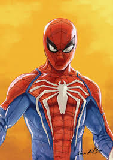
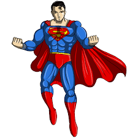

Spider-Man is often considered the best superhero because of his relatability as an "everyman" hero, balancing immense, responsibly-used power with ordinary teenage problems. Peter Parker's journey from a self-interested teenager to a selfless hero driven by the mantra "With great power comes great responsibility" highlights his profound emotional depth, resilience, and willingness to sacrifice everything for others.

Superman is considered the best superhero because he embodies the ultimate, incorruptible hero who chooses kindness, hope, and compassion despite having god-like powers. As the original archetype, he represents an aspirational moral compass rather than just a power fantasy, focusing on inspiring humanity, protecting the weak, and exercising restraint.
Return to Top